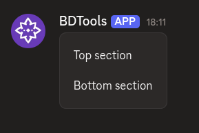
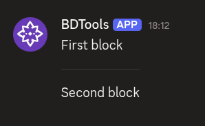

Back to Home
$addSeparator
$addSeparator adds a separator component to the message. Separators create visual breaks between other components. They go inside containers or standalone without a parent.
Syntax
$addSeparator[(Divider;Spacing;Container ID)]All parameters are optional.
Divider: set totrueto show a visible line,falsefor just spacing.Spacing: the size of the spacing around the separator. Eithersmallorlarge.Container ID: optional ID of the container to put this separator inside. Leave empty to use the separator standalone (not inside any container).
What happens
$addSeparatorcreates a separator.- If you provide a container ID, it attaches to that container.
- The separator adds a visual break between the components above and below it.
Example 1: Small spacing without a divider
$addContainer[main]
$addTextDisplay[Top section;main]
$addSeparator[false;small;main]
$addTextDisplay[Bottom section;main]
What happens:
$addContainercreates a container.- The first text display appears at the top.
$addSeparatoradds a divider line between them.- The second text display appears below the divider.
The separator creates a clear visual break between the two text displays.
Example 2: Large spacing with a divider
$addTextDisplay[First block]
$addSeparator[true;large]
$addTextDisplay[Second block]
What happens:
- The first text display appears on its own.
$addSeparatoradds extra vertical space with no visible line, not attached to any container.- The second text display appears below.
The separator creates spacing without a dividing line.
Common uses
- Separating different sections of content in a container
- Adding spacing between components for better readability
- Grouping related content with dividers
- Standalone separators when you need a break between uncontained components
See also
- $addContainer: to create a container for the separator